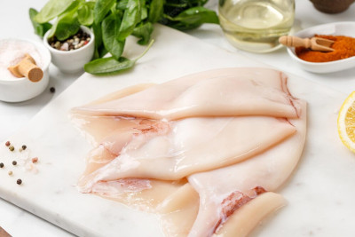

Vegan Squid Fillet!

Here we have a delicious and rubbery lunch option, full of protein, fiber and surprisingly no ink.
Now, you might be asking: "That just seems to be normal squid meat. Where does the Vegan part comes in?" and for that what I can tell you is that teh squids that Chef Scratch uses all base their diets on plant based and bacterial foods. They are considered vegan on our book.
Ingredients
- 4 Squids (Vegan ones only pls)
- 2 Tablespoons of olive oil
- 2 Tablespoons of salt and pepper
- A handfull of garnish vegetables
Preparation
The Squid meats is really rubbery and is just made to get eaten by giant blu chef penguins, so we have to make it softer.
In order to do that we have to:
- First hang the meat up and do a kickboxing routine on it for 5 minutes straight.
- Then we want to let it soak on warm water. This could take around 30 minutes
- While the meat is in the water we will cut out garnish and distribute it around our table
- On a chopping table we will proceed to slice the squid's heads and use the remains to feed your favorite kitchen helpers
- Season the squid heads with salt and pepper
- Let the heads roast on an olive oil coated skillet for 5 minutes each side
- Enjoy!
You can click on Chef Scratch little helper to return to the main page!